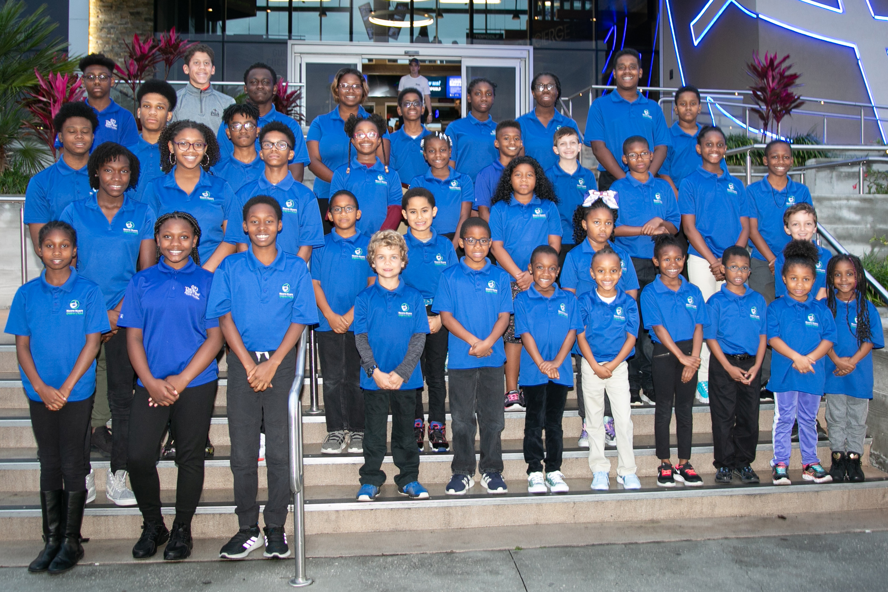
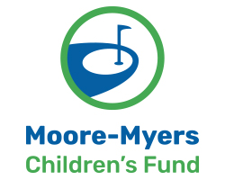
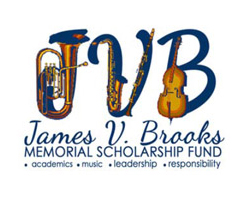
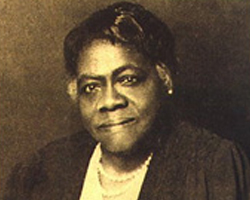

Help us change the world...one child at a time.
The Black Rose Foundation for Children, Inc. is a 501(c)(3) organization that welcomes contributions from individuals and organizations to help fund our programs and initiatives. We believe that children are precious and that each child deserves an opportunity to be healthy, safe and happy. We believe that one way of ensuring as many children as possible get that extra help and support is to think of our help as an investment in them and their future. We therefore welcome any monetary contributions as well as partnerships and in-kind donations that will assist organizations that apply for assistance with us.
Donate to the BRFC Annual Fund

Moore-Myers Children's Fund
The Moore-Myers Children's Fund began in 2014 and was inspired by two women who gave their lives to make other lives better, especially children. Annie Mildred Moore was a mother, teacher and passionate golfer. Jessie Mae Myers was a mother, entrepreneur and mentor to many. It is because of these two women that their children, Dr. Justine Redding (daughter of Annie M. Moore) and Richard Blackston (son of Jessie M. Myers) want to help lift children up through golf and mentoring.

James V. Brooks Memorial Scholarship
The James V. Brooks Scholarship Fund was established by his sister, Ms. Shirley Bing. The mission of the fund is: (1) to provide scholarships to graduating seniors in local Jacksonville schools that intend to be active in music related activities during their higher education tenure and (2) to financially assist children in Jacksonville who express an interest in music and whose families are unable to afford instruction to develop their skills.

Dr. Mary McLeod Bethune Scholarship
Honoring the founder of Bethune-Cookman University and the National Council of Negro Women, this scholarship supports emergency funding for children in state custody, assist with special enrichment activities for them as well as foster children who have aged out of the foster care system. Funds are also used to support university students who were previously in foster care in Atlanta, GA, Jacksonville, FL and Memphis, TN.
Non-Traditional Fundraising
The leadership of the Black Rose Foundation for Children, Inc. recognizes that our country’s economy is currently being challenged . We also understand that in such an economy people are less likely to release their expendable funds or they just don’t have money to give. We hope to encourage those persons who want to support our mission and thus help children by presenting alternative and innovative ways to contribute. These are some of the non-traditional ways you can help:
- Contributing at least $5.00 online to The Black Rose Foundation for Children, Inc.
- Supporting and participating in one or more of our special events
- Donating valuable personal articles on our behalf for re-sale or consignment
- Make your birthday, anniversary, or any other special occasion a fundraiser for us
- Contacting us about your idea for a fundraiser for us
If you are interested in these or any non-traditional fundraising ideas, please contact us at blackrosefoundation@yahoo.com or call us at (888) 530-9401.